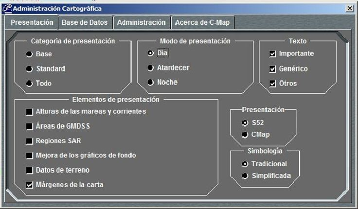

Edición de Escenarios

Mediante este diálogo, el operador puede preparar el Escenario de un Ejercicio. Consiste en una herramienta de presentación de datos cartográficos sobre la que el operador dispondrá de ayudas para especificar todos los datos relacionados con la definición del Escenario de un Ejercicio:
- Región de Juego.
- Cartas del Escenario.
- Posiciones iniciales de Unidades y Falsos Ecos.
- Zonas, Líneas y Rutas del Ejercicio.
Este diálogo consta Área de Presentación del Escenario y un Área de Información del Escenario. Para acceder a distinta funcionalidad incluye un Menú y una Barra de Iconos. Además, sobre este diálogo se muestra, cuando es invocada desde la ventana correspondiente (ver Manual de Preparación – Preparación de Ejercicios), una Herramienta de Dibujo con la que se podrá especificar gráficamente los siguientes elementos:
- Zonas de esfuerzo Pesquero
- Rutas de Tráfico Mercante
- Zonas Tácticas
- Zonas Minadas
- Zonas Ambientales
- Planes PIM
- Aerovías
- Zonas ROE
Área de Presentación del Escenario:
Consiste en la presentación gráfica del Escenario mediante una cartografía digital C-Map sobre la que se muestra la Región de Juego y las Cartas del Escenario que lo componen.
Sobre esta presentación se pueden mostrar también las Zonas, Líneas y Rutas definidas para un Ejercicio y las unidades y falsos ecos en las posiciones iniciales del Ejercicio, con simbología NTDS o STANAG-4420 (ver Anexos – Simbología). Para facilitar una visión sinóptica de la situación táctica inicial, las unidades son mostradas con vector velocidad y etiqueta descriptiva, con las mismas características que la Consola de Alumno (ver Manual del Alumno – Consola Táctica – Pantalla Táctica).
Mediante el Menú y la Barra de Iconos de este diálogo, el operador puede acceder a la siguiente funcionalidad asociada a la Presentación del Escenario:
Archivo
|
Filtrar
|
Unidades
|
Menú Archivo:
Nuevo: Comienza la edición de un nuevo Escenario.
Abrir: Abre diálogo para seleccionar un Escenario de la BD para su presentación y edición.
Borrar: Abre diálogo para seleccionar un Escenario de la BD para su borrado.
Guardar: Guarda en la BD el Escenario en edición.
Guardar como ... : Guarda el Escenario en edición, especificando nuevo nombre.
Escala: Selecciona la escala de presentación del Escenario:
Salir: Cerrar este diálogo.
Menú Filtrar:
Meridianos / Paralelos. Activa o desactiva la presentación de una rejilla de meridianos y paralelos encima de la carta. Las líneas de meridianos y paralelos que se muestran se adaptan al nivel de escala con el que se ve la carta en cada momento.
Cartografía C-Map: Abre la ventana de administración de la cartografía. Las opciones de esta ventana se describen en detalle en el Manual de Alumno (ver Manual de Alumno – Pantalla Táctica – Menú Ver).

Menú Unidades:
Simbología STANAG / NTDS: Selecciona la simbología empleada para presentación de las unidades sobre el Escenario entre STANAG-4420 o NTDS.
Etiqueta Normal / Extendida: Selecciona el tipo de etiqueta asociada a las unidades presentadas sobre el Escenario. Si la etiqueta es Normal muestra únicamente el nombre de la unidad, y si es Extendida presenta además la velocidad y rumbo iniciales de la unidad (Ver apartado Unidades).
Barra de Iconos: El selector de la Barra de Iconos permite seleccionar entre los dos modos de control de la presentación del Escenario: modo Hook o Zoom. Según el modo seleccionado las acciones del ratón sobre la cartografía tienen un resultado distinto:
Modo Hook:
- Pulsación Botón Izquierdo: Mover Hook.
- Pulsación Botón Izquierdo: Mover Marca.
- Pulsar y arrastrar Botón Izquierdo: Demora y distancia: Se realizan mediciones de marcación y distancia sobre la carta. Para ello, pulsar con el botón izquierdo del ratón sobre la carta y arrastrar el ratón manteniéndolo pulsado, con lo que se presentará una línea sobre la carta cuya Demora y Distancia es mostrada constantemente en el siguiente recuadro, que aparece sobre la carta.
- Pulsar y arrastrar Botón Derecho: Mover unidades: Se modifican las posiciones iniciales de las unidades. Para ello, pulsar con el botón derecho del ratón sobre la unidad que se desea mover y arrastrar el ratón manteniéndolo pulsado hasta la nueva posición.
Modo Zoom:
- Pulsación Botón Izquierdo: Ampliación: Se realiza un Zoom Más x 2, es decir se reduce la escala de presentación de la carta a la mitad de la actual.
- Pulsación Botón Derecho: Reducción: Se realiza un Zoom Menos x 2, es decir se amplia la escala de presentación de la carta al doble de la actual.
- Pulsar y arrastrar Botón Izquierdo: Selección área: Se realiza un zoom sobre un área de interés de la carta. Para ello deberá pulsar con el botón izquierdo del ratón sobre la carta y arrastrar el ratón manteniéndolo pulsado, con lo que se presentará un rectángulo sobre la carta. Al soltar el botón izquierdo del ratón se ajustará automáticamente la escala y centrado de la carta para mostrar el área seleccionada.
- Pulsar y arrastrar Botón Derecho: Mover Carta: Se selecciona la posición de centrado de la presentación del escenario. Para ello, pulsar con el botón derecho del ratón sobre cualquier punto de la carta y arrastrar el ratón manteniéndolo pulsado hasta la posición deseada.
Área de Información del Escenario:
Carta de Referencia: Este área muestra una visión simplificada del escenario con la que el usuario podrá situar geográficamente bien una vista de la Región de Juego dentro de una carta del mundo o bien una vista de la región visualizada según el centrado y zoom dentro de la carta presentada, según la opción elegida con el botón derecho del ratón.
Nombre del Escenario: Este parámetro determina el nombre del Escenario, el cual es tenido en cuenta como un identificador único del mismo. Debe ser introducido obligatoriamente.
Cursor: En esta área se muestra constantemente la posición del cursor y la demora y distancia del cursor con respecto al Hook.
Referencia: En esta área se muestra constantemente la posición del Hook.
Región de Juego: En esta área de datos se configuran y presentan los datos de la región de juego asignada al Escenario en edición. En ella se muestra constantemente el ancho, el alto y la posición de la esquina superior izquierda de la Región de Juego.
La Región de Juego se representa en la cartografía mediante un rectángulo de color rojo. Marcando el selector asociado a este área de datos situado junto a la etiqueta de Región de Juego, se activa la edición de la misma. Cuando está activada esta edición, se podrá modificar la misma bien introduciendo los datos manualmente en área de datos o bien modificando gráficamente el rectángulo que representa la Región de Juego.
Herramienta de Dibujo:
La herramienta de dibujo sirve al operador para especificar los puntos que definen los distintos elementos que se pueden añadir al escenario:
- Zonas de esfuerzo Pesquero
- Rutas de Tráfico Mercante
- Zonas Tácticas
- Zonas Minadas
- Zonas Ambientales
- Planes PIM
- Aerovías
Los elementos lineales o poligonales se definen mediante esta ventana:

Los elementos circulares mediante esta otra:

Pulsando el botón Importar se puede seleccionar un fichero de texto que contenga puntos geográficos en formato adecuado y cargar estos puntos en la lista. Sobre el escenario se muestra la polilínea o polígono definido con estos puntos.
El fichero debe ser un texto plano con una línea para cada punto conteniendo las coordenadas con el siguiente formato:
GG MM.MMM X,GG MM.MMM Y
Siendo:
G - grados
M - minutos
X - N o S
Y - E o W
Ejemplo:
32 30.000 N, 17 22.000 W
35 00.000 N, 17 22.000 W
35 00.000 N, 17 24.300 W
32 30.000 N, 17 24.300 W
En el caso de Planes PIM y Aerovías la primera línea del fichero debe incluir un 2 para indicar que cada punto contiene dos datos adicionales que se añaden detrás de las coordenadas del punto. Estos datos adicionales son:
- Velocidad (en nudos) y Altura/profundidad (en pies) para los planes PIM.
- Velocidad (en nudos) y Nivel de Vuelo (en pies) para las aerovías.
El fichero deberá contener, en este caso, cuatro datos separados por coma en cada línea, con el formato que se indica a continuación:
Planes PIM
GG MM.MMM X,GG MM.MMM Y,V,A
Siendo:
V – Velocidad (0.0 – 999.0)
A – Altura (-99999.0 – 99999.0)
Ejemplo:
32 30.000 N,17 22.000 W,10.5,-10.0
35 00.000 N,17 22.000 W,15.7,-5.0
35 00.000 N,17 24.300 W,10.6,0.0
32 30.000 N,17 24.300 W,12,10
Aerovías
GG MM.MMM X,GG MM.MMM Y,V,F
Siendo:
V – Velocidad (0.0 – 999.0)
F – Nivel de Vuelo (1000.0 – 99999.0)
Ejemplo:
32 30.000 N,17 22.000 W,100.0,1000.5
35 00.000 N,17 22.000 W,200.5,1800.2
35 00.000 N,17 24.300 W,300.6,3000
32 30.000 N,17 24.300 W,250,3500
Si no hay fichero de puntos, se pueden insertar los puntos a mano de dos formas:
- Pulsando el botón Añadir (a la izquierda), se muestra una ventana en la que se pueden escribir la longitud y latitud del punto, y en su caso, los datos adicionales. Se pueden añadir tantos puntos como sea necesario. Finalmente se pulsa Aceptar.
- Haciendo clic con el botón izquierdo del ratón sobre cada uno de los puntos que definen el polígono o la polilínea y doble clic en el último punto.
Una vez definidos los puntos por cualquiera de los tres métodos, la ventana cambia de formato, desaparece el botón Importar y aparecen los botones de edición (Insertar, Modificar y Borrar).

Las operaciones que se pueden realizar en esta ventana son las siguientes:
- Seleccionar colores de primer plano y de fondo. Al pulsar con el botón izquierdo del trackball sobre cada uno de los dos cuadrados que aparecen en la esquina superior izquierda de la ventana se abre una nueva ventana para selección de colores, donde puede elegirse el color por su nombre dentro de una lista o bien indicando la proporción de los colores básicos (Rojo, verde y azul) que lo conforman. Los colores seleccionados serán utilizados como colores de primer plano (color de línea) y de fondo en los dibujos libres que se realicen a partir de este momento.
- Seleccionar trama de relleno. Pulsando con el botón izquierdo del trackball sobre el cuadrado a la derecha de los de selección de colores, se despliega una lista con las diferentes tramas disponibles.
- Seleccionar el estilo de la línea. Pulsando con el botón izquierdo del trackball sobre el último cuadrado a la derecha que aparece en la parte superior de la ventana, se despliega una lista con los diferentes estilos de línea disponibles.
- Seleccionar la anchura de la línea: Pulsando con el botón izquierdo del trackball en el desplegable numérico que aparece en la parte superior de la ventana, se despliega una lista con las diferentes anchuras de línea disponibles, que van desde 0 (sin línea) hasta 7.
- Seleccionar el tipo de letra: Pulsando con el botón izquierdo del trackball en el desplegable alfanumérico que aparece en la parte superior de la ventana, se abre una ventana para la selección del tipo de letra. En esta ventana puede seleccionarse la fuente y sus características, como el tamaño, si es o no negrita, itálica o subrayado.
- Añadir, insertar, modificar y borrar puntos de la lista, pulsando en cada caso los botones situados al pie.
- Aceptar o rechazar los cambios pulsando el botón Aceptar o Cancelar respectivamente.